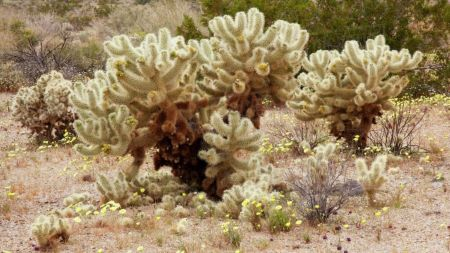
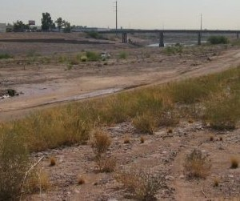

Phoenix, AZ
The Cacti Actively Hate You
Cacti are cool and fun from afar, sure. But in Phoenix the cacti aren't just a pretty picture anymore, they're on your streets, in your yards, and if you're not careful, in your skin. We have jumping cacti that live up to their name and really attack you. That cactus in the picture looks kinda fluffy and soft right? It's name "Teddy Bear" cholla would lead you to believe it's friendly and pet-able. But that couldn't be more wrong. These little assholes have barbs that stick to anything and everything and are extremely difficult and painful to remove. Those barbs live on the many, many lobes that fall off and stick to you, your children, your pets, and your soul if you so much as look at it sideways.
Despite seeming like The Absolute Worst Plant to Plant, these satan cacti are everywhere. They're intentionally planted as landscaping and scattered throughout the large swaths of desert wash that are sprinkled throughout the city. When we say "stay on the paths" we say it in part so you don't get lost and die of heat stroke or dehydration but also so you don't run into one of these bastard cacti.
The Weather Sucks.
People say we're lucky because it's a "dry heat" and it doesn't snow here. I say it's a season-less oven that occasionally turns off in the "winter". Summer lasts about 8 months and we don't have those nifty cool summer nights other places do. This year, we had our first 100 degree day on May 21st, which is abnormally late in the year. In 2020 the first 100 (though technically it was 102) degree day was April 26th. In the year 2020, Phoenix broke it's 1989 record for most days at or above 100 degrees with a whopping 144 days of just being an oven.
People joke about being able to fry an egg on the sidewalk. Having tried it, I wouldn't recommend it because the eggs cook really slow and get dry and rubbery and weird. But yes, you could cook an egg on the sidewalk if you really wanted to. A better idea for taking advantage of The Oven that is the outdoors is using your car to bake cookies. Leave some dough on a plate in the car in the morning and come back after work or school to some nice gooey cookies and a fantastic smelling car.

Where's the Water??
Since it's ya know... a desert, it doesn't really rain here. In fact, in 2021, it has rained less than an inch in many parts of Phoenix. Phoenix is considered by the National Weather Service to be in an "Extreme Drought", but at least we're not in an "Exceptional Drought" I guess? While we don't usually have water shortages and rationing like California does, the future doesn't look so good. A vast system of irrigation canals branching from the Salt, Gila, and Colorado Rivers have supplied the city with water for decades. The current Salt River pictured above doesn't look like it'll be supplying too much water now.
Somehow though, in the deserts of Phoenix people somehow think it's a fantastic idea to have a lot of sprawling golf courses, country clubs, green lawns, and So. Many. Pools. Billionaires want to build picturesque suburbs just outside Phoenix with pretty green lawns and parks and lakes. Where they think all that water would be coming from continues to confuse me.
